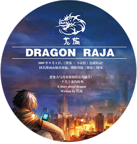

One Book One Day
《龙族》是作家江南创作的系列长篇魔幻小说，由《龙族Ⅰ火之晨曦》、《龙族Ⅱ悼亡者之瞳》、《龙族Ⅲ黑月之潮》、《龙族Ⅳ奥丁之渊》组成.
2009年10月1日开始在小说绘上连载，第一部于2010年04月首次出版，第二部于2011年05月出版，第三部上篇于2012年12月出版，第三部中篇于2013年07月出版，第三部下篇于2013年12月出版，第四部则于2015年10月出版。
那男孩缓步登上最高处，转身坐下，俯瞰众生，便如年轻的罗马皇帝终于回到了自己的万神殿。“令我哥哥悲伤的人，我要他们都死，我不喜欢血腥，但我要他们恐惧和绝望。”他轻声说，如同神降下启示。《龙族》
“我想她这时候已经带着路明非在逃亡的路上了。”“明知道那是恶魔，还是会带着他逃亡？”“如果某个人宁可变成恶魔也要救她，那她会立刻站到恶魔那边去的。”“加图索先生你对你的未婚妻似乎没什么信心啊！”“不，是有信心，因为换了我我也会这么做。”《龙族V》

江南个人更喜欢史诗奇幻。其本人喜欢读历史，看了《魔戒》以后启发了江南写中国化的史诗奇幻的想法。江南觉得中国古代的素材很多，可以写进故事里对写作者的能力也是有要求的。读者发现它和现实有联系，但又和现实中的故事不一样，便有了《龙族》。 史诗奇幻很考验作者的控制力。
杨治，笔名江南。中国作家、小说家、内地幻想文学家，《九州志》主编，媒体公司总经理。1977年7月13日生于安徽舒城，就读北京大学，留学于美国名校Washington University in St Louis，师从质谱科学代表人物Michael L. Gross，凭借回忆北大生活的小说《此间的少年》踏入文坛。